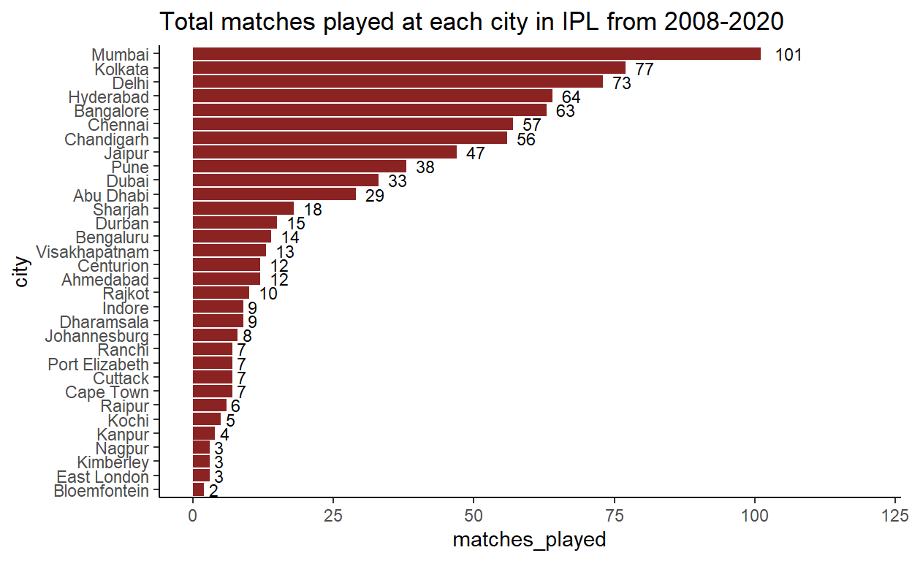

Introduction:
Before the twenty-first century, decision-making in sports was mainly based on observation. This has changed with technological progress, especially related to data acquisition and personal
availability of computing. The application of analytics in sports is a growing field that seeks to develop methodologies to collect and analyze sports data in order to improve decision making.
The popular sports which are heavily influenced by money are also influenced by analytics which are soccer, basketball, cricket, ice-hockey, baseball and American football[1]. The current research focuses on the analytics in cricket, it is regarded as one of the major sports with a long history dating back to 16th century. In terms of participation and viewership in terms of media, it is the second most popular after soccer.
Cricket is a played between two teams with 11 players on each side. Each team consists of batsmen, bowlers and all-rounders (who can bat and bowl). If one team does the batting the other team bowls. This time period is called as an innings. There are always two innings in a match unless it is interrupted by some external factors like the change in climate, bad light, rain etc[2]. Cricket has three formats of play, test cricket – played for consecutive five days with maximum of 90 overs per day, One-Day Internationals (ODI) – maximum of 50 overs per side, Twenty20 (T20) – maximum of 20 overs per side. The T20 format in cricket is a “big money” sport. Among professional leagues Indian Premier League (IPL) has the second highest average player salaries trailing National Basketball Association (NBA)[1].
For this paper, I am going to investigate the Indian Premier League(IPL) matches which were played in between year 2008 and 2020.The investigation is mostly focused on finding the most successful team in the IPL based on victories, players in the team, toss-decision and other metrics over the given period of time.
Data
The data was collected from the Kaggle, an online datasets source for many datascientists and machine learning practitioners. Kaggle gives acess to users to publish datasets, survey and make models in data-science environment. helps to communicte with other analysts and engineers. The data set which is used in this project is the IPL Complete dataset(2008-2020) which was published in the Kaggle and was collected from the source cricsheet.org[3].
The data provided in this dataset is covered from 2008-04-17 to 2020-11-09, which is 13 IPL seasons of data. This data is an appropriate choice as it has details of all the matches played from start of the IPL in 2008 till 2020 IPL.
The variables that I am specifically interested in this dataset are listed as follows:
- city : the city where the IPl match was played
- date : date when the match was played
- player_of_match : player who scored more points in the match
- venue : the venue where the match was played
- team1 : one of the two teams playing on that given date
- team2 : one of the two teams playing on that given date
- toss_winner : team that won the toss
- toss-decision : team that won the toss will either choose to bat or field
- winner : winner of the match
- reswult : result of the match either it is win by runs/wickets/tie
- result-margin : by how many runs did they winning team win/ by how many wickets did the winning team win
- eliminator : either thematch is a eliminator or a league match
IMPORTING THE DATA
reading the data
ipl_matches <- read_csv("C:/Users/srika/Desktop/data/ipl/IPL Matches 2008-2020.csv")
head(ipl_matches)
# A tibble: 6 x 17
id city date player_of_match venue neutral_venue team1
<dbl> <chr> <date> <chr> <chr> <dbl> <chr>
1 335982 Banga~ 2008-04-18 BB McCullum M Chi~ 0 Royal~
2 335983 Chand~ 2008-04-19 MEK Hussey Punja~ 0 Kings~
3 335984 Delhi 2008-04-19 MF Maharoof Feroz~ 0 Delhi~
4 335985 Mumbai 2008-04-20 MV Boucher Wankh~ 0 Mumba~
5 335986 Kolka~ 2008-04-20 DJ Hussey Eden ~ 0 Kolka~
6 335987 Jaipur 2008-04-21 SR Watson Sawai~ 0 Rajas~
# ... with 10 more variables: team2 <chr>, toss_winner <chr>,
# toss_decision <chr>, winner <chr>, result <chr>,
# result_margin <dbl>, eliminator <chr>, method <chr>,
# umpire1 <chr>, umpire2 <chr>viewing column names
colnames(ipl_matches)
[1] "id" "city" "date"
[4] "player_of_match" "venue" "neutral_venue"
[7] "team1" "team2" "toss_winner"
[10] "toss_decision" "winner" "result"
[13] "result_margin" "eliminator" "method"
[16] "umpire1" "umpire2" checking for summary statistics of the dataset and aslo knowing the number of NA values
skimr::skim(ipl_matches)
| Name | ipl_matches |
| Number of rows | 816 |
| Number of columns | 17 |
| _______________________ | |
| Column type frequency: | |
| character | 13 |
| Date | 1 |
| numeric | 3 |
| ________________________ | |
| Group variables | None |
Variable type: character
| skim_variable | n_missing | complete_rate | min | max | empty | n_unique | whitespace |
|---|---|---|---|---|---|---|---|
| city | 13 | 0.98 | 4 | 14 | 0 | 32 | 0 |
| player_of_match | 4 | 1.00 | 5 | 17 | 0 | 233 | 0 |
| venue | 0 | 1.00 | 8 | 52 | 0 | 36 | 0 |
| team1 | 0 | 1.00 | 13 | 27 | 0 | 15 | 0 |
| team2 | 0 | 1.00 | 13 | 27 | 0 | 15 | 0 |
| toss_winner | 0 | 1.00 | 13 | 27 | 0 | 15 | 0 |
| toss_decision | 0 | 1.00 | 3 | 5 | 0 | 2 | 0 |
| winner | 4 | 1.00 | 13 | 27 | 0 | 15 | 0 |
| result | 4 | 1.00 | 3 | 7 | 0 | 3 | 0 |
| eliminator | 4 | 1.00 | 1 | 1 | 0 | 2 | 0 |
| method | 797 | 0.02 | 3 | 3 | 0 | 1 | 0 |
| umpire1 | 0 | 1.00 | 5 | 21 | 0 | 48 | 0 |
| umpire2 | 0 | 1.00 | 5 | 15 | 0 | 47 | 0 |
Variable type: Date
| skim_variable | n_missing | complete_rate | min | max | median | n_unique |
|---|---|---|---|---|---|---|
| date | 0 | 1 | 2008-04-18 | 2020-11-10 | 2014-04-23 | 596 |
Variable type: numeric
| skim_variable | n_missing | complete_rate | mean | sd | p0 | p25 | p50 | p75 | p100 | hist |
|---|---|---|---|---|---|---|---|---|---|---|
| id | 0 | 1.00 | 756349.55 | 305894.25 | 335982 | 501227.8 | 729298 | 1082626.2 | 1237181 | ▇▅▃▂▇ |
| neutral_venue | 0 | 1.00 | 0.09 | 0.29 | 0 | 0.0 | 0 | 0.0 | 1 | ▇▁▁▁▁ |
| result_margin | 17 | 0.98 | 17.32 | 22.07 | 1 | 6.0 | 8 | 19.5 | 146 | ▇▁▁▁▁ |
from the skim() we can see know the summary statistics of our data, here we have 13 character variables, 1 date variable, 3 numeric variables. we also have 13 ,missing values in the city column and 4 missing values in player-of_match, winner,result,eliminator columns.
unique(ipl_matches$result)
[1] "runs" "wickets" "tie" NA CLEANING DATA
checking the rows containing NA values in winner column
# A tibble: 4 x 17
id city date player_of_match venue neutral_venue team1
<dbl> <chr> <date> <chr> <chr> <dbl> <chr>
1 501265 Delhi 2011-05-21 <NA> Fero~ 0 Delhi~
2 829763 Banga~ 2015-04-29 <NA> M Ch~ 0 Royal~
3 829813 Banga~ 2015-05-17 <NA> M Ch~ 0 Royal~
4 1178424 Benga~ 2019-04-30 <NA> M.Ch~ 0 Royal~
# ... with 10 more variables: team2 <chr>, toss_winner <chr>,
# toss_decision <chr>, winner <chr>, result <chr>,
# result_margin <dbl>, eliminator <chr>, method <chr>,
# umpire1 <chr>, umpire2 <chr>It seems the match is abandoned due to some reason, because we have the “player_of_match”, “winner”, “result”, “result_margin” columns as NA, which in most we can say the match is not played and abandoned although the toss_decision is made.so removing those rows from the data set.
we also have 13 NA values in the city column lets have a look at those rows
# A tibble: 13 x 17
id city date player_of_match venue neutral_venue team1
<dbl> <chr> <date> <chr> <chr> <dbl> <chr>
1 729281 <NA> 2014-04-17 YS Chahal Sharja~ 1 Delh~
2 729287 <NA> 2014-04-19 PA Patel Dubai ~ 1 Roya~
3 729289 <NA> 2014-04-19 JP Duminy Dubai ~ 1 Kolk~
4 729291 <NA> 2014-04-20 GJ Maxwell Sharja~ 1 Raja~
5 729295 <NA> 2014-04-22 GJ Maxwell Sharja~ 1 King~
6 729297 <NA> 2014-04-23 RA Jadeja Dubai ~ 1 Raja~
7 729299 <NA> 2014-04-24 CA Lynn Sharja~ 1 Roya~
8 729301 <NA> 2014-04-25 AJ Finch Dubai ~ 1 Sunr~
9 729303 <NA> 2014-04-25 MM Sharma Dubai ~ 1 Chen~
10 729309 <NA> 2014-04-27 M Vijay Sharja~ 1 Delh~
11 729311 <NA> 2014-04-27 DR Smith Sharja~ 1 Sunr~
12 729313 <NA> 2014-04-28 Sandeep Sharma Dubai ~ 1 King~
13 729317 <NA> 2014-04-30 B Kumar Dubai ~ 1 Mumb~
# ... with 10 more variables: team2 <chr>, toss_winner <chr>,
# toss_decision <chr>, winner <chr>, result <chr>,
# result_margin <dbl>, eliminator <chr>, method <chr>,
# umpire1 <chr>, umpire2 <chr>lets try to find the 13 missing city values using the venues from the same data set. lets find where is Sharjah Cricket stadium and Dubai Intern. cricket stadium from the data
# A tibble: 38 x 2
city venue
<chr> <chr>
1 Bangalore M Chinnaswamy Stadium
2 Chandigarh Punjab Cricket Association Stadium, Mohali
3 Delhi Feroz Shah Kotla
4 Mumbai Wankhede Stadium
5 Kolkata Eden Gardens
6 Jaipur Sawai Mansingh Stadium
7 Hyderabad Rajiv Gandhi International Stadium, Uppal
8 Chennai MA Chidambaram Stadium, Chepauk
9 Mumbai Dr DY Patil Sports Academy
10 Cape Town Newlands
# ... with 28 more rows(uniques <- uniques[!is.na(uniques$city),])
# A tibble: 36 x 2
city venue
<chr> <chr>
1 Bangalore M Chinnaswamy Stadium
2 Chandigarh Punjab Cricket Association Stadium, Mohali
3 Delhi Feroz Shah Kotla
4 Mumbai Wankhede Stadium
5 Kolkata Eden Gardens
6 Jaipur Sawai Mansingh Stadium
7 Hyderabad Rajiv Gandhi International Stadium, Uppal
8 Chennai MA Chidambaram Stadium, Chepauk
9 Mumbai Dr DY Patil Sports Academy
10 Cape Town Newlands
# ... with 26 more rowslooks like the sharjah stadium is at Sharjah city and Dubai Intern. Stadium is at Dubai. lets impute these values repectively in the missing places in the city column
Total teams in the IPL
union(ipl_matches$team1,ipl_matches$team2)
[1] "Royal Challengers Bangalore" "Kings XI Punjab"
[3] "Delhi Daredevils" "Mumbai Indians"
[5] "Kolkata Knight Riders" "Rajasthan Royals"
[7] "Deccan Chargers" "Chennai Super Kings"
[9] "Kochi Tuskers Kerala" "Pune Warriors"
[11] "Sunrisers Hyderabad" "Gujarat Lions"
[13] "Rising Pune Supergiants" "Rising Pune Supergiant"
[15] "Delhi Capitals" Here the teams “Rising Pune Supergiants” and “Rising Pune Supergiant” are one team and should be considered as one team. we need to recode the “Rising Pune Supergiant” which is spelled wrong as “Rising Pune Supergiants”
ipl_matches["team1"][ipl_matches["team1"] == "Rising Pune Supergiant"] <- "Rising Pune Supergiants"
ipl_matches["team2"][ipl_matches["team2"] == "Rising Pune Supergiant"] <- "Rising Pune Supergiants"
ipl_matches["toss_winner"][ipl_matches["toss_winner"] == "Rising Pune Supergiant"] <- "Rising Pune Supergiants"
ipl_matches["winner"][ipl_matches["winner"] == "Rising Pune Supergiant"] <- "Rising Pune Supergiants"
union(ipl_matches$team1,ipl_matches$team2)
[1] "Royal Challengers Bangalore" "Kings XI Punjab"
[3] "Delhi Daredevils" "Mumbai Indians"
[5] "Kolkata Knight Riders" "Rajasthan Royals"
[7] "Deccan Chargers" "Chennai Super Kings"
[9] "Kochi Tuskers Kerala" "Pune Warriors"
[11] "Sunrisers Hyderabad" "Gujarat Lions"
[13] "Rising Pune Supergiants" "Delhi Capitals" now we can see that “Rising Pune Supergiants” as one team
DATA EXPLORATION (TRANSFORMATION & VIZUALISATION)
total IPL matches played in between 2008 and 2020
total_matches_played <- count(ipl_matches)
noquote(paste("Total IPL matches played from 2008 to 2020 is", total_matches_played,"matches"))
[1] Total IPL matches played from 2008 to 2020 is 812 matchestotal matches played by individual teams in the IPL
total_matches_played_by_individual_teams <- data.frame(table(ipl_matches$team1) + table(ipl_matches$team2))
colnames(total_matches_played_by_individual_teams) <- c("team","matches_played")
temp <- arrange(total_matches_played_by_individual_teams,desc(matches_played))
formattable(temp)
| team | matches_played |
|---|---|
| Mumbai Indians | 203 |
| Kolkata Knight Riders | 192 |
| Royal Challengers Bangalore | 192 |
| Kings XI Punjab | 190 |
| Chennai Super Kings | 178 |
| Delhi Daredevils | 159 |
| Rajasthan Royals | 159 |
| Sunrisers Hyderabad | 124 |
| Deccan Chargers | 75 |
| Pune Warriors | 45 |
| Delhi Capitals | 33 |
| Gujarat Lions | 30 |
| Rising Pune Supergiants | 30 |
| Kochi Tuskers Kerala | 14 |
(plot1 <- ggplot(total_matches_played_by_individual_teams,aes(team,matches_played))+
geom_bar(stat = "identity",fill="turquoise2")+
geom_text(aes(label=matches_played),vjust=-0.3,size=3)+
labs(title="Matches played by each team in the IPL")+
scale_x_discrete(limits = c(temp$tteam))+
theme_classic()+
theme(axis.text.x = element_text(angle = 90, hjust = 1)))

From the above Data in the table and the visualization we can see that the Mumbai Indians, Kolkata Knight Riders, Royal Chalengers Banglore, Chennai Super Kings,Delhi Daredevils, and Rajasthan Royals have played over 150 games in the IPL. Mumbai Indians sitting at the top of the table have played over 200 games in 13 seasons. with average of 15.3 matches per season. Probably it might had won most of the matches in IPL during leagues and qualified for the eliminators where it gets more matches to play. Lets check how each team performed in the IPL seasons
total win, lose and tie matches of individual team in the IPL
creating a new column “loser” in the ipl_matches dtatframe to know the team which lost the match ( the dataset has no column which says about who lost the match)
Here I am using the ifelse() function to find the team which lost the match. here if the first expression is true then the second expression is evaluated else the third expression is considered. Here I have used nested ifelse to check two conditions.
if the match is not tie then check if team1 is the winner if true team2 is lost else team1 is lost else NA ( the match is abandoned due climate change or other external factors)
finding the toital wins and loses of individual teams and then merging them with the total_matches_played_by_individual_teams dataframe and forming a new dataframe named win_lose_tie_by_team which describes the no.of matches palyed, matches-won, matches_lost, and tie matches.
total_win_individual_team <- ipl_matches %>%
group_by(team = winner) %>%
tally(name = "matches_won",sort = TRUE)
total_lose_individual_team <- ipl_matches %>%
group_by(team = loser) %>%
tally(name = "matches_lost",sort = TRUE)
win_and_lose_by_team <- merge(total_matches_played_by_individual_teams,total_win_individual_team) %>%
merge(total_lose_individual_team)
win_lose_tie_by_team <- win_and_lose_by_team %>% mutate(tie=matches_played-matches_won-matches_lost)
win_lose_tie_by_team <- win_lose_tie_by_team %>%
mutate(win_percentage = round(matches_won/(matches_won+matches_lost)*100,2)) %>%
arrange((win_percentage))
formattable((arrange(win_lose_tie_by_team,desc(win_percentage))))
| team | matches_played | matches_won | matches_lost | tie | win_percentage |
|---|---|---|---|---|---|
| Chennai Super Kings | 178 | 106 | 71 | 1 | 59.89 |
| Mumbai Indians | 203 | 120 | 81 | 2 | 59.70 |
| Delhi Capitals | 33 | 19 | 14 | 0 | 57.58 |
| Sunrisers Hyderabad | 124 | 66 | 56 | 2 | 54.10 |
| Kolkata Knight Riders | 192 | 99 | 90 | 3 | 52.38 |
| Rajasthan Royals | 159 | 81 | 77 | 1 | 51.27 |
| Rising Pune Supergiants | 30 | 15 | 15 | 0 | 50.00 |
| Royal Challengers Bangalore | 192 | 91 | 100 | 1 | 47.64 |
| Kings XI Punjab | 190 | 88 | 101 | 1 | 46.56 |
| Gujarat Lions | 30 | 13 | 16 | 1 | 44.83 |
| Kochi Tuskers Kerala | 14 | 6 | 8 | 0 | 42.86 |
| Delhi Daredevils | 159 | 67 | 91 | 1 | 42.41 |
| Deccan Chargers | 75 | 29 | 46 | 0 | 38.67 |
| Pune Warriors | 45 | 12 | 33 | 0 | 26.67 |
df.long <- melt(win_lose_tie_by_team[,c(1,3,4)])
(plot2 <- ggplot(df.long,aes(team,value,fill=variable))+
geom_bar(stat="identity",position="dodge")+
labs(x="team",y="matches",title = "Wins and Loses of individual teams in the IPL from 2008-2020")+
theme_classic()+
theme(axis.text.x = element_text(angle = 90, hjust = 1)))
(plot3 <- ggplot(win_lose_tie_by_team,aes(team,win_percentage))+
geom_bar(stat = "identity",fill="springgreen4")+
geom_text(aes(label=win_percentage),hjust=-0.5,size=3)+
scale_x_discrete(limits=c(win_lose_tie_by_team$team))+
scale_y_continuous(limits=c(0,100),breaks=c(0,25,50,75,100))+
labs(title = "Win percentage of individual teams in the IPL")+
theme_classic()+
coord_flip())

from the information in the table and the visualization we can see that Chennai super kings gains the table top position with win percentage .19% more than the Mumbai Indians. Delhi daredevils, Sunrisers hyderabad anfd Kolkata knight Riders taking the second, third, fourth position respectively. lets try to find if there is any home advantage to the teams when played at their home venues.
No.of matches played at each city
first lets find the total matches played at each venue and then compare them with the wins of individual teams
matches_played_at_each_city <- data.frame(table(ipl_matches$city))
colnames(matches_played_at_each_city) <- c("city","matches_played")
a<-arrange(matches_played_at_each_city,matches_played)
arrange(matches_played_at_each_city, desc(matches_played))
city matches_played
1 Mumbai 101
2 Kolkata 77
3 Delhi 73
4 Hyderabad 64
5 Bangalore 63
6 Chennai 57
7 Chandigarh 56
8 Jaipur 47
9 Pune 38
10 Dubai 33
11 Abu Dhabi 29
12 Sharjah 18
13 Durban 15
14 Bengaluru 14
15 Visakhapatnam 13
16 Ahmedabad 12
17 Centurion 12
18 Rajkot 10
19 Dharamsala 9
20 Indore 9
21 Johannesburg 8
22 Cape Town 7
23 Cuttack 7
24 Port Elizabeth 7
25 Ranchi 7
26 Raipur 6
27 Kochi 5
28 Kanpur 4
29 East London 3
30 Kimberley 3
31 Nagpur 3
32 Bloemfontein 2(plot4 <- ggplot(a, aes(matches_played,city))+
geom_bar(stat = "identity",fill = "brown4")+
labs(title = "Total matches played at each city in IPL from 2008-2020")+
xlim(c(0,120))+
theme_classic()+
geom_text(aes(label=matches_played),hjust=-0.5,size=3)+
scale_y_discrete(limits = c(a$city)))

101 matches were played at Mumbai with Kolkata taking the second place having 77 matches played. 24 more matches played at Mumbai when compared to Kolkata.Looks like Mumbai is the main Venue for IPL matches.
Do teams have advantage if they play at home city when compared to other teams
venue_advantage_data <- ipl_matches %>%
group_by(team = winner,city) %>%
tally(sort = TRUE, name = "matches_won")
# we are looking at a teams and their most wins at a city
venue_advantage_data <- venue_advantage_data %>%
group_by(team) %>%
slice(1) %>%
ungroup()%>%
arrange(desc(matches_won))
formattable(venue_advantage_data)
| team | city | matches_won |
|---|---|---|
| Mumbai Indians | Mumbai | 53 |
| Kolkata Knight Riders | Kolkata | 45 |
| Chennai Super Kings | Chennai | 40 |
| Rajasthan Royals | Jaipur | 32 |
| Kings XI Punjab | Chandigarh | 30 |
| Sunrisers Hyderabad | Hyderabad | 30 |
| Royal Challengers Bangalore | Bangalore | 29 |
| Delhi Daredevils | Delhi | 27 |
| Rising Pune Supergiants | Pune | 5 |
| Delhi Capitals | Delhi | 4 |
| Pune Warriors | Pune | 4 |
| Deccan Chargers | Cuttack | 3 |
| Gujarat Lions | Rajkot | 3 |
| Kochi Tuskers Kerala | Kochi | 2 |
from the above table data we can see that Mumbai Indians has won 53 of its matches out of 101 played at Mumbai which is slightly higher than 50% of the matches played at Mumbai. and Kolkata has more win percentage when compared to Mumbai winning 45 matches out of 77 played at home and other teams also have their own home advantage This shows that every team has its own home advantage when winning the matches
lets see if the probability of winning a match is higher if a team wins the toss
Is winning a toss really helps in winning the game?
here I have created a new column called " winning_toss_and_match" and recoded the values of winning a toss and a match to 1 and losing a toss and winnning a match to 0, so that it will be easy to calculate the probability of winning a match.
ipl_matches <- ipl_matches %>%
mutate(winning_toss_and_match = case_when(toss_winner==winner~1,
toss_winner!=winner~0))
table(ipl_matches$winning_toss_and_match)
0 1
394 418 here there are 418 instances where a team won the match when it won the toss which is >0.5 probability of winning a match.
(toss_winner_data <- ipl_matches %>% select(toss_winner) %>% group_by(toss_winner) %>% tally(name="freq") %>% arrange(desc(freq)))
# A tibble: 14 x 2
toss_winner freq
<chr> <int>
1 Mumbai Indians 106
2 Kolkata Knight Riders 98
3 Chennai Super Kings 97
4 Royal Challengers Bangalore 86
5 Kings XI Punjab 85
6 Rajasthan Royals 85
7 Delhi Daredevils 79
8 Sunrisers Hyderabad 57
9 Deccan Chargers 43
10 Delhi Capitals 20
11 Pune Warriors 20
12 Gujarat Lions 15
13 Rising Pune Supergiants 13
14 Kochi Tuskers Kerala 8ggplot(toss_winner_data,aes(toss_winner,freq))+
geom_bar(stat = "identity",fill="lightgreen")+
scale_x_discrete(limits =toss_winner_data$toss_winner )+
coord_flip()+
labs(title="most tosses won by each team")+
theme_classic()

we can see here the most number of tosses were won by the Mumbai Indians who have actually won more number of matches in the IPL
most number of matches won by a team in a season
here I created a new column called season which gives the information of seasons of IPL
ipl_matches <- ipl_matches %>%
mutate(season= format(date,format="%Y"))
season_team_wins<- ipl_matches %>%
select(season,winner) %>%
group_by(season,team=winner) %>%
tally(name="wins",sort=TRUE)
(seasons_team_standings <- split(season_team_wins,season_team_wins$season))
$`2008`
# A tibble: 8 x 3
# Groups: season [1]
season team wins
<chr> <chr> <int>
1 2008 Rajasthan Royals 13
2 2008 Kings XI Punjab 10
3 2008 Chennai Super Kings 9
4 2008 Delhi Daredevils 7
5 2008 Mumbai Indians 7
6 2008 Kolkata Knight Riders 6
7 2008 Royal Challengers Bangalore 4
8 2008 Deccan Chargers 2
$`2009`
# A tibble: 8 x 3
# Groups: season [1]
season team wins
<chr> <chr> <int>
1 2009 Delhi Daredevils 10
2 2009 Deccan Chargers 9
3 2009 Royal Challengers Bangalore 9
4 2009 Chennai Super Kings 8
5 2009 Kings XI Punjab 7
6 2009 Rajasthan Royals 6
7 2009 Mumbai Indians 5
8 2009 Kolkata Knight Riders 3
$`2010`
# A tibble: 8 x 3
# Groups: season [1]
season team wins
<chr> <chr> <int>
1 2010 Mumbai Indians 11
2 2010 Chennai Super Kings 9
3 2010 Deccan Chargers 8
4 2010 Royal Challengers Bangalore 8
5 2010 Delhi Daredevils 7
6 2010 Kolkata Knight Riders 7
7 2010 Rajasthan Royals 6
8 2010 Kings XI Punjab 4
$`2011`
# A tibble: 10 x 3
# Groups: season [1]
season team wins
<chr> <chr> <int>
1 2011 Chennai Super Kings 11
2 2011 Mumbai Indians 10
3 2011 Royal Challengers Bangalore 10
4 2011 Kolkata Knight Riders 8
5 2011 Kings XI Punjab 7
6 2011 Deccan Chargers 6
7 2011 Kochi Tuskers Kerala 6
8 2011 Rajasthan Royals 6
9 2011 Delhi Daredevils 4
10 2011 Pune Warriors 4
$`2012`
# A tibble: 9 x 3
# Groups: season [1]
season team wins
<chr> <chr> <int>
1 2012 Kolkata Knight Riders 12
2 2012 Delhi Daredevils 11
3 2012 Chennai Super Kings 10
4 2012 Mumbai Indians 10
5 2012 Kings XI Punjab 8
6 2012 Royal Challengers Bangalore 8
7 2012 Rajasthan Royals 7
8 2012 Deccan Chargers 4
9 2012 Pune Warriors 4
$`2013`
# A tibble: 9 x 3
# Groups: season [1]
season team wins
<chr> <chr> <int>
1 2013 Mumbai Indians 13
2 2013 Chennai Super Kings 12
3 2013 Rajasthan Royals 11
4 2013 Sunrisers Hyderabad 10
5 2013 Royal Challengers Bangalore 9
6 2013 Kings XI Punjab 8
7 2013 Kolkata Knight Riders 6
8 2013 Pune Warriors 4
9 2013 Delhi Daredevils 3
$`2014`
# A tibble: 8 x 3
# Groups: season [1]
season team wins
<chr> <chr> <int>
1 2014 Kings XI Punjab 12
2 2014 Kolkata Knight Riders 11
3 2014 Chennai Super Kings 10
4 2014 Mumbai Indians 7
5 2014 Rajasthan Royals 7
6 2014 Sunrisers Hyderabad 6
7 2014 Royal Challengers Bangalore 5
8 2014 Delhi Daredevils 2
$`2015`
# A tibble: 8 x 3
# Groups: season [1]
season team wins
<chr> <chr> <int>
1 2015 Chennai Super Kings 10
2 2015 Mumbai Indians 10
3 2015 Royal Challengers Bangalore 8
4 2015 Kolkata Knight Riders 7
5 2015 Rajasthan Royals 7
6 2015 Sunrisers Hyderabad 7
7 2015 Delhi Daredevils 5
8 2015 Kings XI Punjab 3
$`2016`
# A tibble: 8 x 3
# Groups: season [1]
season team wins
<chr> <chr> <int>
1 2016 Sunrisers Hyderabad 11
2 2016 Gujarat Lions 9
3 2016 Royal Challengers Bangalore 9
4 2016 Kolkata Knight Riders 8
5 2016 Delhi Daredevils 7
6 2016 Mumbai Indians 7
7 2016 Rising Pune Supergiants 5
8 2016 Kings XI Punjab 4
$`2017`
# A tibble: 8 x 3
# Groups: season [1]
season team wins
<chr> <chr> <int>
1 2017 Mumbai Indians 12
2 2017 Rising Pune Supergiants 10
3 2017 Kolkata Knight Riders 9
4 2017 Sunrisers Hyderabad 8
5 2017 Kings XI Punjab 7
6 2017 Delhi Daredevils 6
7 2017 Gujarat Lions 4
8 2017 Royal Challengers Bangalore 3
$`2018`
# A tibble: 8 x 3
# Groups: season [1]
season team wins
<chr> <chr> <int>
1 2018 Chennai Super Kings 11
2 2018 Sunrisers Hyderabad 10
3 2018 Kolkata Knight Riders 9
4 2018 Rajasthan Royals 7
5 2018 Kings XI Punjab 6
6 2018 Mumbai Indians 6
7 2018 Royal Challengers Bangalore 6
8 2018 Delhi Daredevils 5
$`2019`
# A tibble: 8 x 3
# Groups: season [1]
season team wins
<chr> <chr> <int>
1 2019 Mumbai Indians 11
2 2019 Chennai Super Kings 10
3 2019 Delhi Capitals 10
4 2019 Kings XI Punjab 6
5 2019 Kolkata Knight Riders 6
6 2019 Sunrisers Hyderabad 6
7 2019 Rajasthan Royals 5
8 2019 Royal Challengers Bangalore 5
$`2020`
# A tibble: 8 x 3
# Groups: season [1]
season team wins
<chr> <chr> <int>
1 2020 Mumbai Indians 11
2 2020 Delhi Capitals 9
3 2020 Sunrisers Hyderabad 8
4 2020 Kolkata Knight Riders 7
5 2020 Royal Challengers Bangalore 7
6 2020 Chennai Super Kings 6
7 2020 Kings XI Punjab 6
8 2020 Rajasthan Royals 6(table_toppers_in_each_season <- season_team_wins %>%
slice(1:2))
# A tibble: 26 x 3
# Groups: season [13]
season team wins
<chr> <chr> <int>
1 2008 Rajasthan Royals 13
2 2008 Kings XI Punjab 10
3 2009 Delhi Daredevils 10
4 2009 Deccan Chargers 9
5 2010 Mumbai Indians 11
6 2010 Chennai Super Kings 9
7 2011 Chennai Super Kings 11
8 2011 Mumbai Indians 10
9 2012 Kolkata Knight Riders 12
10 2012 Delhi Daredevils 11
# ... with 16 more rows2010,2013,2017,2019,2020 are the seasons where Mumbai Indians was the leader of the points table with more wins and in 2011 and 2015 it was in the second place. After Mumbai Indians, Chennai Super kings is the most successful with more wins.
top 10 most valuable players in the IPL
most_valuable_players <- ipl_matches %>%
select(player_of_match,winner) %>%
group_by(player_of_match,winner) %>%
tally(sort=TRUE, name="freq") %>%
ungroup() %>%
slice(1:10)
formattable(most_valuable_players)
| player_of_match | winner | freq |
|---|---|---|
| AB de Villiers | Royal Challengers Bangalore | 21 |
| CH Gayle | Royal Challengers Bangalore | 17 |
| MS Dhoni | Chennai Super Kings | 15 |
| RG Sharma | Mumbai Indians | 15 |
| DA Warner | Sunrisers Hyderabad | 12 |
| SK Raina | Chennai Super Kings | 12 |
| V Kohli | Royal Challengers Bangalore | 12 |
| AD Russell | Kolkata Knight Riders | 11 |
| KA Pollard | Mumbai Indians | 11 |
| AM Rahane | Rajasthan Royals | 10 |
ggplot(most_valuable_players, aes(player_of_match,freq))+
geom_bar(stat="identity",fill="coral1")+
scale_x_discrete(limits=c(most_valuable_players$player_of_match))+
coord_flip()+
labs(title="most valuable players awards receieved in the IPL ")

we can see that RG Sharma and KA pollard are from Mumbai Indians and MS Dhoni and SK Raina are from Chennai super Kings which are the ,most successful teams. Having valuable players in the team will also help in teams Victory most of the times. Also the top two players in this table have less victories which is quite interesting.
Is it better to bat first or chase next when we win the toss
result_margin_when_chasing <- ipl_matches %>%
select(result,result_margin) %>%
filter(result=="wickets") %>%
group_by(result_margin,result) %>%
tally(sort = TRUE,name="freq") %>%
arrange(desc(freq))
result_margin_when_batting_first <- ipl_matches %>%
select(result,result_margin) %>%
filter(result=="runs") %>%
group_by(result_margin,result) %>%
tally(sort = TRUE,name="freq") %>%
arrange(desc(freq))
result_margin_when_batting_first
# A tibble: 91 x 3
# Groups: result_margin [91]
result_margin result freq
<dbl> <chr> <int>
1 10 runs 13
2 14 runs 13
3 4 runs 11
4 1 runs 10
5 7 runs 10
6 13 runs 10
7 15 runs 10
8 37 runs 10
9 9 runs 9
10 12 runs 9
# ... with 81 more rowsformattable(result_margin_when_chasing)
| result_margin | result | freq |
|---|---|---|
| 6 | wickets | 88 |
| 7 | wickets | 84 |
| 5 | wickets | 79 |
| 8 | wickets | 62 |
| 4 | wickets | 42 |
| 9 | wickets | 39 |
| 3 | wickets | 18 |
| 10 | wickets | 14 |
| 2 | wickets | 6 |
| 1 | wickets | 3 |
[1] "matches_won_when_chasing_the_target: 435"[1] "matches_won_when_batting_first: 364"(plot5 <- ggplot(result_margin_when_batting_first,aes(result_margin,freq))+
geom_bar(stat = "identity",fill="sandybrown")+
geom_smooth()+
labs(title="matches won by batting first vs win by runs",x="win by runs", y="frequency")+
theme_classic())

(plot6 <- ggplot(result_margin_when_chasing,aes(result_margin,freq))+
geom_bar(stat = "identity",fill="powderblue")+
geom_smooth()+
labs(title="matches won by chasing the target vs win by no of wickets",x="win by wickets", y="frequency")+
scale_x_discrete(limits=c(result_margin_when_chasing$result_margin))+
theme_classic())

we can observe here batting first teams have won with less margin of only 10-13 runs but while chasing with than 6 wickets in hand which shows while chasing the teams are comfortable and are in good position. batting first teams have won with a result margin of over 50 runs only twice in each occasion. 146 is the highest run margin win while batting first.
Reflection:
while doing the project I have come across new functions which I have used for the first time like match() which is used to match the values in two different columns which I have used to impute the city names based on the venue provided. Overall the data cleaning task has consumed a lot of time since i have to find the missing values in each column and then impute them with the respective values. The data exploration and visualization part was so exciting finding the most number of wins, player of match awards and toss decisions and other important statistics.
Conclusion:
From all the Data and visualizations, we can see that the Mumbai Indians is the most successful team with most trophies in their name in the IPL followed by the Chennai super Kings. Also most number of toss was won by the Mumbai Indians. Chris Gayle had won the most number of player of match titles. Mumbai Indians had hosted most of the IPL matches.
Bibliography:
[1] T. B. Swartz, “Research directions in cricket,” Handb. Stat. Methods Anal. Sport., pp. 445–460, 2017, doi: 10.1201/9781315166070. [2] A. Verma and M. Izadi, “Cricket Prognostic System: A framework for real-time analysis in ODI cricket,” no. August 2016, 2017. [3] link Rice, D., & Rolfe, M. (n.d.). Data Science Fundamentals: R Tutorials. Retrieved Fromlink